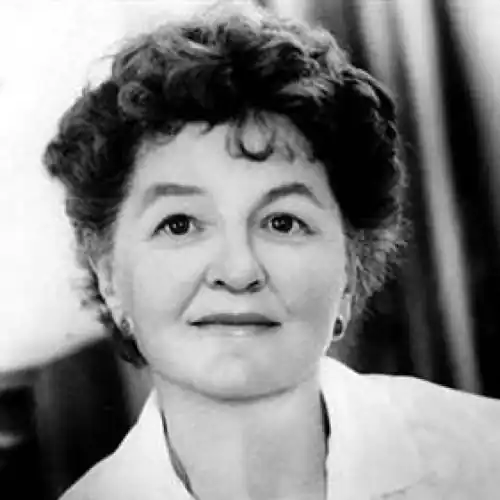
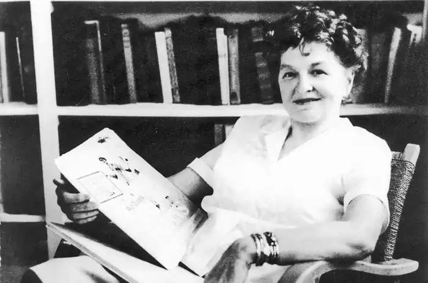

09.08.1899 року — 23.04.1996 року
Англійська письменниця, в основному відома як автор серії дитячих книг про Мері Поппінс.
Народилася в місті Меріборо — Австралія, Квінсленд. Батьками були банківський керуючий Треверс Роберт Гофф (Travers Robert Goff) і Маргарет Агнес (Margaret Agnes), до заміжжя — Морехед (Morehead). Її батько помер, коли їй було сім років. Офіційно причиною смерті її батька було встановлено "несамовитість епілептичного припадку" (epileptic seizure delirium), але сама Треверс "завжди вірила, що справжньою причиною було тривале тяжке пияцтво". Писати почала з дитинства — вона писала оповідання та п'єси для шкільних вистав, а братів і сестер розважала чарівними розповідями. Її поеми були опубліковані, коли їй не було й двадцяти років — вона писала для австралійського журналу "Бюлетень" (The Bulletin). В молодості здійснила подорож по Австралії і Нової Зеландії, потім поїхала в Англію в 1923 році. Спочатку пробувала себе на сцені (Пакрейда — це сценічний псевдонім), граючи виключно в п'єсах Шекспіра, але потім захоплення літературою перемогло, і вона повністю присвятила себе літературі, публікуючи свої твори під псевдонімом "P. L. Travers" (два перших ініціали використовувалися для приховування жіночого імені — звичайна для англомовних письменниць практика). В 1925 році в Ірландії Треверс познайомилася з поетом-містиком Джорджем Вільямом Расселлом (George William Russell), який справив на нього великий вплив — і як людина, і як літератор. Він тоді був редактором журналу "Айріш Стэйтсмэн" (The Irish Statesman) і прийняв для публікації її кілька поем. Через Расселла Треверс познайомилася з Вільямом Батлером Йейтс (William Butler Yeats) та іншими ірландськими поетами, які прищепили їй інтерес і знання світової міфології. Йейтс був не тільки видатним віршотворцем, алеі знатним окультистом. Це напрямок і стає для Памели Треверс визначальним аж до останніх днів її життя. У 1934 році публікація "Мері Поппінс" була першим літературним успіхом Треверс. Пішли продовження книги, а також романи, збірки віршів та нехудожні твори. Фільм Діснея "Мері Поппінс" був випущений в 1964 році (головну роль — Мері Поппінс — зіграла актриса Джулі Ендрюс). Фільм був висунутий на премію "Оскар" в 13 номінаціях і удостоївся п'яти нагород. У Радянському Союзі в 1983 році був випущений фільм "Мері Поппінс, до побачення!". Треверс була в дружніх стосунках з Альфредом Орэджем, видавцем езотеричного журналу New Age. Орэдж в 1938 році познайомив її з Георгієм Гурджієвим. Привабливість особистості російського містика робить Памелу Треверс його вірною ученицею. Вона бере участь у роботі багатьох групп його послідовників, зустрічається з Крішнамурті, займається порівняльним религиоведением в його езотеричному варіанті, шукаючи і знаходячи наскрізні міфологічні мотиви у навчаннях, віддалених один від одного у часі і в просторі. У своєму житті відрізнялася тим, що намагалася не афішувати факти особистого життя, в тому числі і своє австралійське походження. "Якщо вас цікавлять факти моєї біографії", — якось сказала Треверс, — то історія мого життя міститься в "Мері Поппінс" та інших моїх книгах". Хоча вона жодного разу не була заміжня, незадовго до свого 40-річчя Треверс усиновила ірландського хлопчика по імені Кэмиллус, при цьому розлучивши її з його братом-близнюком, так як взяти двох дітей вона відмовилася (хлопчики воссоединилсь лише декілька років потому). У 1977 році Треверс було присуджено звання Офіцера Ордена Британської імперії.